Mobile Hotel Search Interface
The FindOptimal Mobile Hotel Search has almost all features available in the full web application version. However, it is a complete redesign for small screens. The main action bar is located on the top, as shown below. From left to right, you can tap to get into the input panel, the result list panel, the map view panel, the quick filter panel, the search control panel and the user menu.|
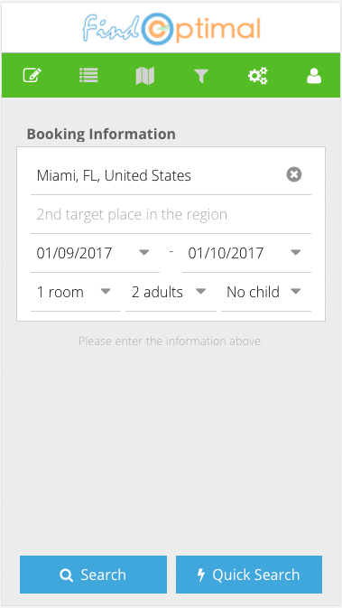 Input Tab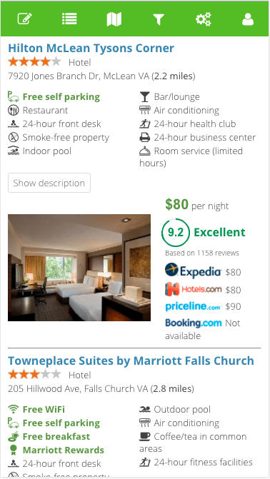 Result List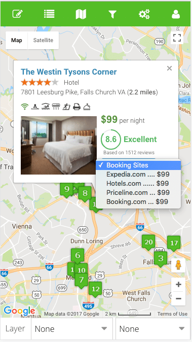 Map View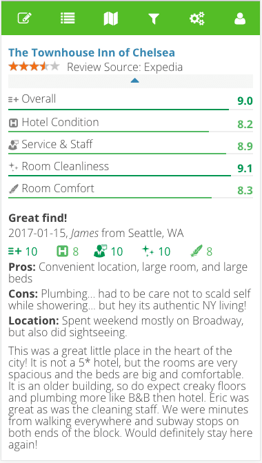 Guest Review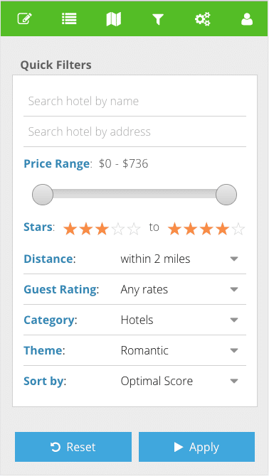 Filter & Sorter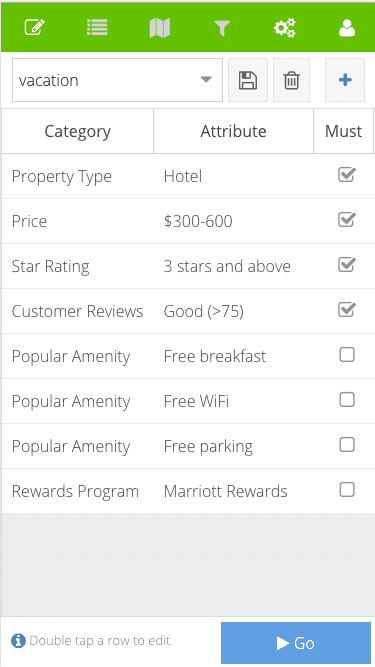 Control Panel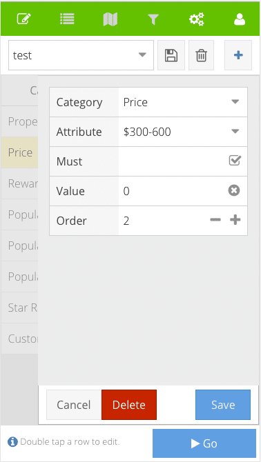 Control Editor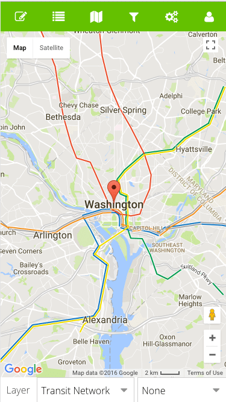 Google Layer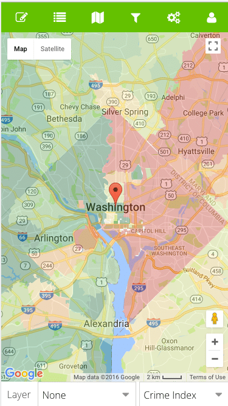 Zip Information |
Map OverlaysAt the bottom of the map panel, there is a bar with two selection controls. The first one allows you to show Public Transit Network, Real-time Traffic and Bicycle Paths. The second one enables you to visualize neighborhood statistics such as Safety Index, Population Density, Income per Capta, etc. User ControlDepending on if you have skipped the sign-in process, you may get a different content on the user menu. The benefit of signing in is that we can retrieve all your predefined preferences in hotel search. The key difference between FindOptimal and regular travel web sites is that we use your profile to personalize the search result. The sign-in process is very easy. You can either use your account with us or sign in with your Facebook or Google account. |
|
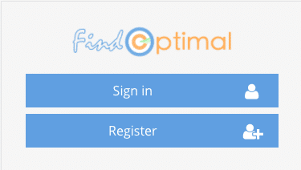 Sign-in Menu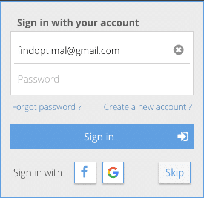 Login Window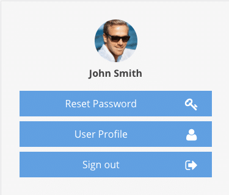 User Menu |